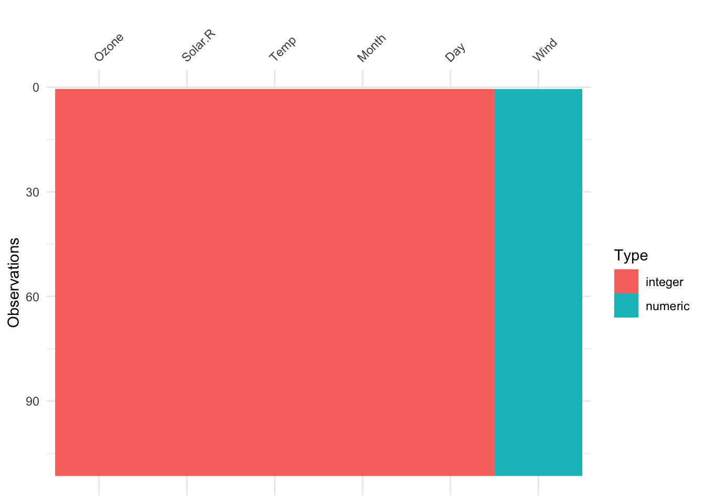
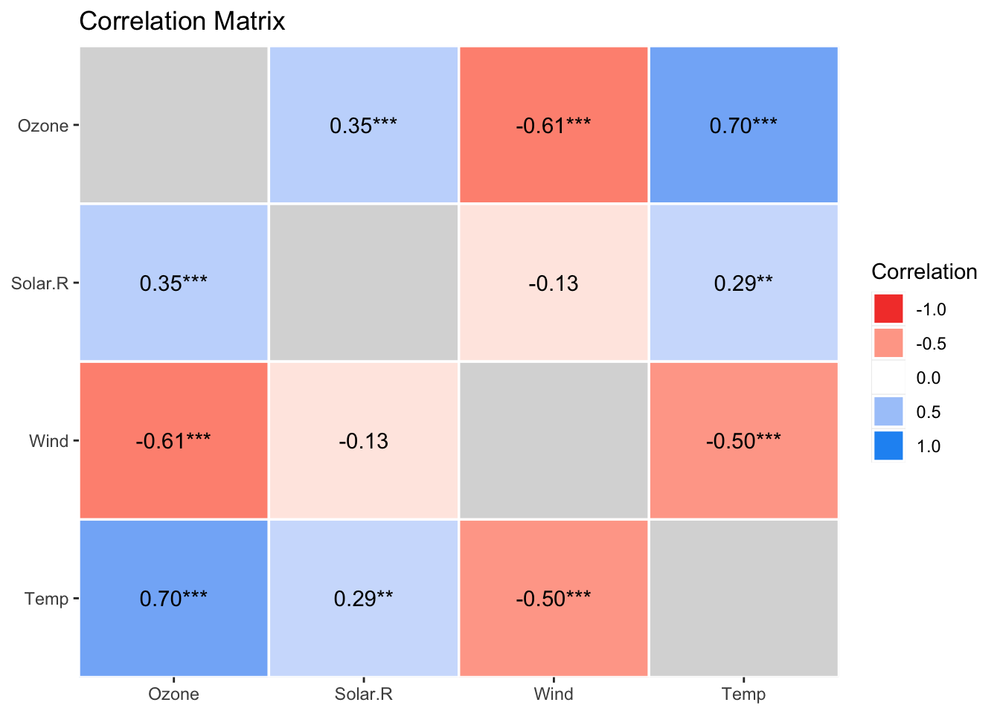
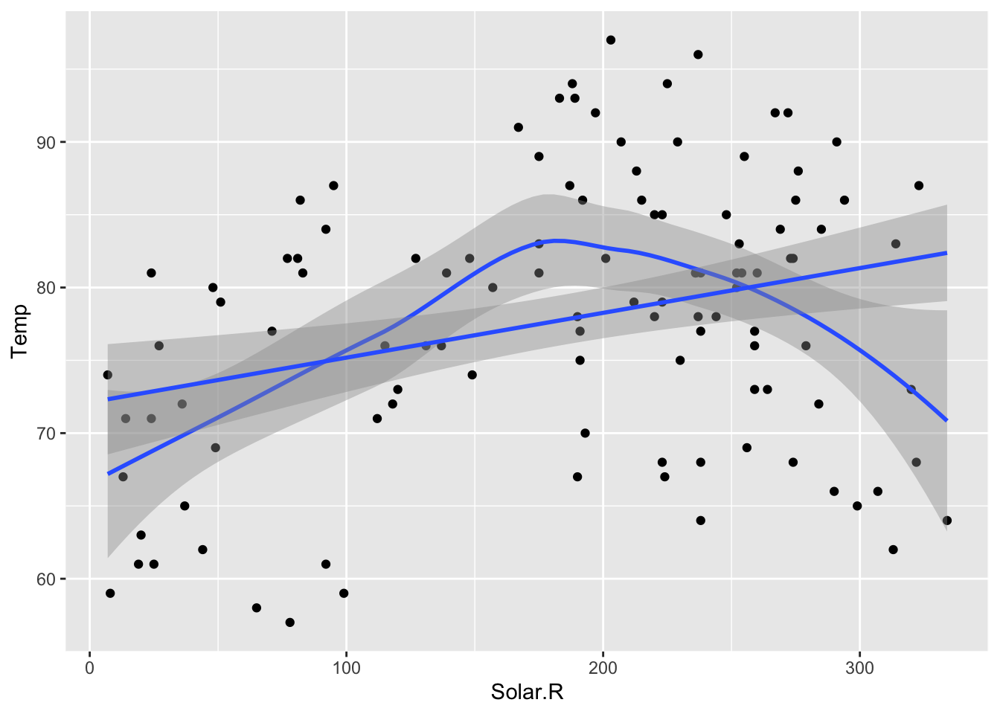

3 Exploracion y Visualizacion de Datos
3.1 Exploración de datos
Una de las buenas prácticas que se recomienda implementar a la hora de analizar datos, es iniciar haciendo una mirada a estos de manera que desde el inicio, se pueda tener un visión general de la materia prima con la que se pretende trabajar.
3.1.1 ¿Que interesa conocer de los datos?
Cada analista podría definir sus propias prioridades, pero posiblemente se pueda tener un consenso en lo siguiente: tipos de datos, las variables, datos atípicos, celdas vacías, tamaño de la base de datos, estructura general de la base de datos, entre otras.
En R podemos echar mano de varias herramientas exploratorias de consulta o de tipo gráficas, que rápidamente permiten tener ese panorama general.
3.2 Una mirada a los datos
Primeramente creamos un primer chunk para cargar los paquetes o librerías de R requeridos para el trabajo con los datos:
library(visdat) # Paquete con varias herramientas para visualizar datos
library(DataExplorer) #Para usar la función plot_missing
library(mosaicData) # Paquete que contiene bases de datos
library(ggplot2) # paquete graficador de alto desempeño
library(colorspace) # Paleta de colores
library(dplyr) #para usar funciones de ordenamiento, selección, agrupación
library(GGally)
library(tidyr) # para usar la función drop_na
library(correlation) # para calcular correlaciones
library(PerformanceAnalytics)
library(psych)
library(ggraph)R posee algunas bases de datos de uso libre, de las cuáles en esta oportunidad se cargará la base de datos airquality la cuál contiene datos ambientales.
En RStudio podemos consultar la ayuda si se desea saber información sobre algún paquete, una función o alguna base de datos. La siguiente instrucción permite acceder a la ayuda para conocer cómo está cosntituida la base de datos airquality:
Seguidamente se carga la base de datos:
Se puede ver un resumen sobre como está constituida dicha base de datos con las siguientes indicaciones:
## Ozone Solar.R Wind Temp Month Day
## 1 41 190 7.4 67 5 1
## 2 36 118 8.0 72 5 2
## 3 12 149 12.6 74 5 3
## 4 18 313 11.5 62 5 4
## 5 NA NA 14.3 56 5 5
## 6 28 NA 14.9 66 5 6## Ozone Solar.R Wind Temp
## Min. : 1.00 Min. : 7.0 Min. : 1.700 Min. :56.00
## 1st Qu.: 18.00 1st Qu.:115.8 1st Qu.: 7.400 1st Qu.:72.00
## Median : 31.50 Median :205.0 Median : 9.700 Median :79.00
## Mean : 42.13 Mean :185.9 Mean : 9.958 Mean :77.88
## 3rd Qu.: 63.25 3rd Qu.:258.8 3rd Qu.:11.500 3rd Qu.:85.00
## Max. :168.00 Max. :334.0 Max. :20.700 Max. :97.00
## NA's :37 NA's :7
## Month Day
## Min. :5.000 Min. : 1.0
## 1st Qu.:6.000 1st Qu.: 8.0
## Median :7.000 Median :16.0
## Mean :6.993 Mean :15.8
## 3rd Qu.:8.000 3rd Qu.:23.0
## Max. :9.000 Max. :31.0
## ## 'data.frame': 153 obs. of 6 variables:
## $ Ozone : int 41 36 12 18 NA 28 23 19 8 NA ...
## $ Solar.R: int 190 118 149 313 NA NA 299 99 19 194 ...
## $ Wind : num 7.4 8 12.6 11.5 14.3 14.9 8.6 13.8 20.1 8.6 ...
## $ Temp : int 67 72 74 62 56 66 65 59 61 69 ...
## $ Month : int 5 5 5 5 5 5 5 5 5 5 ...
## $ Day : int 1 2 3 4 5 6 7 8 9 10 ...Usando el paquete visdat, hacemos una exploración gráfica de la base de datos:


plot_missing(airquality) # Me indica si tenemos datos en blanco y me da una recomendación, que en este caso dice que es "Good y Ok", lo cual no es mucho problema
Si se desea, se pueden omitir los datos NA, pero al implicar este procedimiento una modificación de la base de datos original, se recomienda crear una nueva variable de almacenamiento, como se muestra en el siguiente chunk:

3.3 Atipicidades
Para el estudio de las tipicidades, se echará mano de dos tipos de gráficos del paquete ggplot2: Diagramas de caja (boxplot) y gráficos de violín (Violinplot).
El paquete ggplot2 es uno de los paquetes más completos que tiene R para generar gráficos diversos y de alta complejidad y calidad, el cuál trabaja bajo una filosofía de Grammar of Graphs (Gramática de gráficos) que permite contruir los gráficos a partir de capas.
Primeramente se crea el marco de trabajo base (Primera capa), el cuál al contener solo la base de datos cargada, no mostrará ningún elemento visual:
Ahora, se agrega una segunda capa de tipo geom_boxplot
ggplot(aire, aes(Month,Ozone )) +
geom_boxplot(alpha = 0.4, color = "blue", aes(group = cut_width(Month, 1)))En el gráfico anterior se puede notar que en el horizontal aparecen los meses dados por número de mes, pero podría ser interesante verlo con nombre del mes. El siguiente código crea una nueva columna en la base de datos con el nombre del mes
aire$Mes <- ifelse(aire$Month == 5, "Mayo",
ifelse (aire$Month == 6, "Junio",
ifelse(aire$Month == 7,"Julio",
ifelse(aire$Month == 8, "Agosto","Septiembre")
)
)
)
aire$Mes <- factor(aire$Mes, levels = c("Mayo","Junio","Julio","Agosto","Septiembre"))Seguidamente crearemos el mismo diagrama de caja, pero usando la nueva columnna
ggplot(aire, aes(Mes, Ozone)) +
geom_boxplot(alpha = 0.4, color = "dodgerblue4", outlier.shape = 19) 
Los datos atípicos se muestran como puntos fuera de la caja, pero esa forma podría cambiar a gusto del usuario. En el siguiente enlace puede ver un compendio de variantes para la figura que podría usarse para representar los puntos en R
La siguiente variante del diagrama de caja puede ser más interesante:
ggplot(aire, aes(Mes, Ozone)) +
geom_boxplot(alpha = 0.4, color = "dodgerblue4", outlier.shape = 19, outlier.color = "red", aes(fill = Month)) +
geom_point(alpha = 0.2)Agreguemos otros elementos importantes en un gráfico, como título:
ggplot(aire, aes(Mes, Ozone)) +
geom_boxplot(alpha = 0.4, color = "dodgerblue4", outlier.shape = 19, outlier.color = "red", aes(fill = Month))+
labs(title = "Media diaria de Ozono en ppm, por mes", subtitle = "Roosevel Island según mes, del 1 de mayo al 30 de septiembre 1973", y = "Ozono")
Otra variante interesante del diagrama de caja que se viene utilizando, es el gráfico de violín o violin plot, el cuál presenta la ventaja de que permite conocer la distribución de los datos durante el recorrido.
Antes de constuir nuestro primer violin plot, podemos simplificar el código almacenando instrucciones de uso frecuente, como seguidamente se muestra:
# g1 es una variables que almacena la primera capa del gráfico a crear
g1 <- ggplot(aire, aes(Mes, Ozone))Los violinplot son un tipo de función de densidad (density plot) para los datos vistos desde arriba.este gráfico se está prefiriendo sobre el box plot, porque permite ver en el recorrido la forma en que se agrupan o se concentran los datos. No es necesario, para efectos de publicación, presentarlo junto con la caja.
Seguidamente, se construye el violin plot:
Se puede agregar los puntos para verlos superpuestos al violinplot:
Se puede superponer además con los box plot:
g1 +
geom_jitter(width = 0.3, alpha = 0.4) +
geom_boxplot(alpha = 0.4, color = "blue") +
geom_violin(aes(alpha = 0.3, fill = Month))En el siguiente código se propone crear algunas estadísticas para los datos agrupados: cantidad de datos, desviación estándar, error estándar y lo límites superior e inferior para el intervalo de confianza para dicha media, con el objetico de incluirlos dentro del gráfico que se viene trabajando.
Para este trabajo se utilizará el operador pipe %>% que permite crear acciones anidadas:
est <- aire %>%
group_by(Mes) %>%
summarise(media = mean(Ozone),
n = n(),
de = sd(Ozone),
ee = de/sqrt(n()),
li = media - 1.96*ee,
ls = media +1.96*ee
)
est## # A tibble: 5 × 7
## Mes media n de ee li ls
## <fct> <dbl> <int> <dbl> <dbl> <dbl> <dbl>
## 1 Mayo 24.1 24 22.9 4.67 15.0 33.3
## 2 Junio 29.4 9 18.2 6.07 17.5 41.3
## 3 Julio 59.1 26 31.6 6.20 47.0 71.3
## 4 Agosto 60 23 41.8 8.71 42.9 77.1
## 5 Septiembre 31.4 29 24.1 4.48 22.7 40.2Se procede a incluir estas nuevas estadísticas al gráfico:
g1 +
geom_jitter(width = 0.3, alpha = 0.4) +
geom_boxplot() +
geom_violin(aes(alpha = 0.3, fill = Month)) +
theme_minimal() +
geom_point(data = est, aes(Mes, media)) +
geom_errorbar(data = est, aes(Mes, media, ymin = li, ymax = ls), width = 0.2, color ="red")
Los gráficos de barras y una variante conocida como lollipops podrín ser útiles en el conteo de datos:

3.4 Una mirada a las correlaciones
R permite constuir matrices gráficas con información variada de los datos, como por ejemplo los gráficos de densidad, gráfico de dispersión y correlaciones que facilitan ese acercamiento a la base de datos a trabajar.
Este gráfico se construye con el paquete GGally:
ggpairs(datos[filas, c(“Columna 1”, “Columna2”,…, “Columna n”)])
Veamos otras opciones de matrices de gráficos de resumen de datos usando los paquetes peformanceanalitycs y psych:
## Warning in par(usr): argument 1 does not name a graphical parameter
## Warning in par(usr): argument 1 does not name a graphical parameter
## Warning in par(usr): argument 1 does not name a graphical parameter
## Warning in par(usr): argument 1 does not name a graphical parameter
## Warning in par(usr): argument 1 does not name a graphical parameter
## Warning in par(usr): argument 1 does not name a graphical parameterSeguidamente se hace un análisis para las correlaciones, la idea es ver si entre las variables numéricas presentes existe algún tipo de correlación fuerte.
Primeramente, trabajaremos con la base de datos original, es decir, sin la nueva columna creada para el Mes:
## Ozone Solar.R Wind Temp Month Day
## 1 41 190 7.4 67 5 1
## 2 36 118 8.0 72 5 2
## 3 12 149 12.6 74 5 3
## 4 18 313 11.5 62 5 4
## 7 23 299 8.6 65 5 7
## 8 19 99 13.8 59 5 8Podemos usar el operador pipe para filtar nuestra base de datos, como se muestra acontinuación:
calidadaire <- airquality %>% # se indica cuál es la base de datos usada
drop_na() %>% # se eliminan los na, toda la fila
dplyr::select(-c(Month, Day)) # eliminamos las columnas Month y DayEs importante explicar el significado de la instrucción dplyr::select.
Ocurre con frecuencia en R que muchos paquetes podrían tener una función con el mismo nombre, entonces, cuando se llama a la función, que en este ejemplo es select, y queremos que sea select del paquete dplyr específicamente y no de otro paquete, entonces se debe indicar el nombre del paquete seguido por el operardor :: y luego la función a usar.
Note que los datos ya no contienen las celdas vacías ni tampoco las columnas de Month y Day.
Es importante tomar en cuenta que la correlación lineal es una métrica sobre la relación lineal entre dos variables, no es un modelo como si lo es una regresión lineal.
Hay varias formas de ver las correlaciones en R, seguidamente se presentan varias opciones:
## # Correlation Matrix (pearson-method)
##
## Parameter1 | Parameter2 | r | 95% CI | t(109) | p
## ---------------------------------------------------------------------
## Ozone | Solar.R | 0.35 | [ 0.17, 0.50] | 3.88 | < .001***
## Ozone | Wind | -0.61 | [-0.72, -0.48] | -8.09 | < .001***
## Ozone | Temp | 0.70 | [ 0.59, 0.78] | 10.19 | < .001***
## Solar.R | Wind | -0.13 | [-0.31, 0.06] | -1.34 | 0.183
## Solar.R | Temp | 0.29 | [ 0.11, 0.46] | 3.21 | 0.003**
## Wind | Temp | -0.50 | [-0.63, -0.34] | -5.98 | < .001***
##
## p-value adjustment method: Holm (1979)
## Observations: 111Podríamos resumir esta tabla:
## # Correlation Matrix (pearson-method)
##
## Parameter | Temp | Wind | Solar.R
## -----------------------------------------
## Ozone | 0.70*** | -0.61*** | 0.35***
## Solar.R | 0.29** | -0.13 |
## Wind | -0.50*** | |
##
## p-value adjustment method: Holm (1979)Graficar los datos de la matriz resultante de la correlación es posible, pero primero se debe organizar la infomración para que la función plot puede interpretarlos correctamente. Note que el resultado anterior del summary muestra una matriz triangular, pero el comando plot necesita que esta matriz sea cuadrada para poder graficar correctamente.
La siguiente instrucción, permite hacer cuadrada la matriz de correlaciones:
## # Correlation Matrix (pearson-method)
##
## Parameter | Ozone | Solar.R | Wind | Temp
## ----------------------------------------------------
## Ozone | | 0.35*** | -0.61*** | 0.70***
## Solar.R | 0.35*** | | -0.13 | 0.29**
## Wind | -0.61*** | -0.13 | | -0.50***
## Temp | 0.70*** | 0.29** | -0.50*** |
##
## p-value adjustment method: Holm (1979)Se podría graficar de la siguiente manera:

Una forma más elegante de hacer este gráfico, es a partir del operador pipe:

Se puede cambiar la forma de la geometría:

El siguiente gráfico de correlación se base en un modelo gaussiano, requiere el paquete ggraph

3.5 Bases para la regresion
Con la capa stat_smooth se puede trazar una curva de mejor ajuste para los datos
## `geom_smooth()` using method = 'loess' and formula = 'y ~ x'
Esta opción de smooth es una ayuda al ojo para encontrar patrones en los datos.
Se puede usar el método lm para comparar entre el partrón anterior y como se vería una ajuste lineal:
## `geom_smooth()` using method = 'loess' and formula = 'y ~ x'
## `geom_smooth()` using formula = 'y ~ x'
Similarmente, comparemos las variables Solar.R y Wind:
Otra forma de ver sl gráfico:
ggplot(aire, aes(Solar.R, Wind)) +
geom_point(aes(color = Mes)) +
geom_smooth() +
geom_smooth(method = "lm")Recordemos la correlación entre estas dos variables:
## Parameter1 | Parameter2 | r | 95% CI | t(109) | p
## ----------------------------------------------------------------
## Solar.R | Wind | -0.13 | [-0.31, 0.06] | -1.34 | 0.183
##
## Observations: 111Note que el IC contempla al valor cero, por lo que podría no haber correlación lineal.